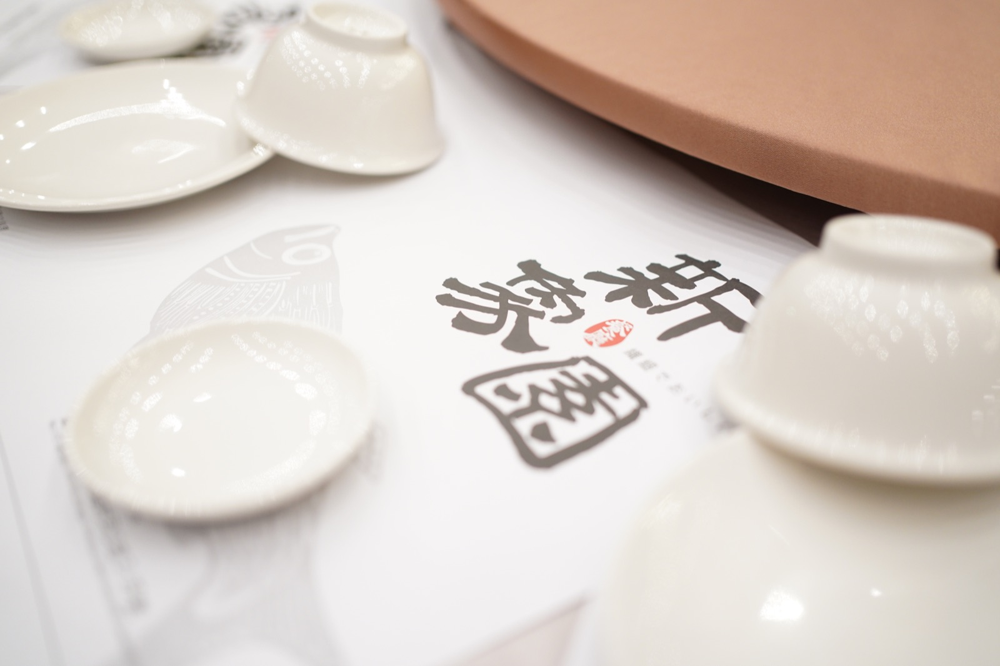
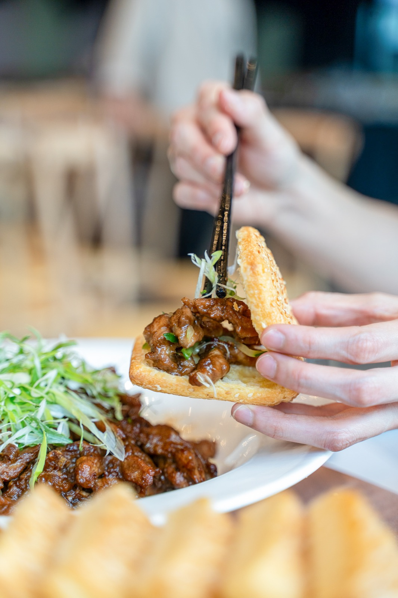
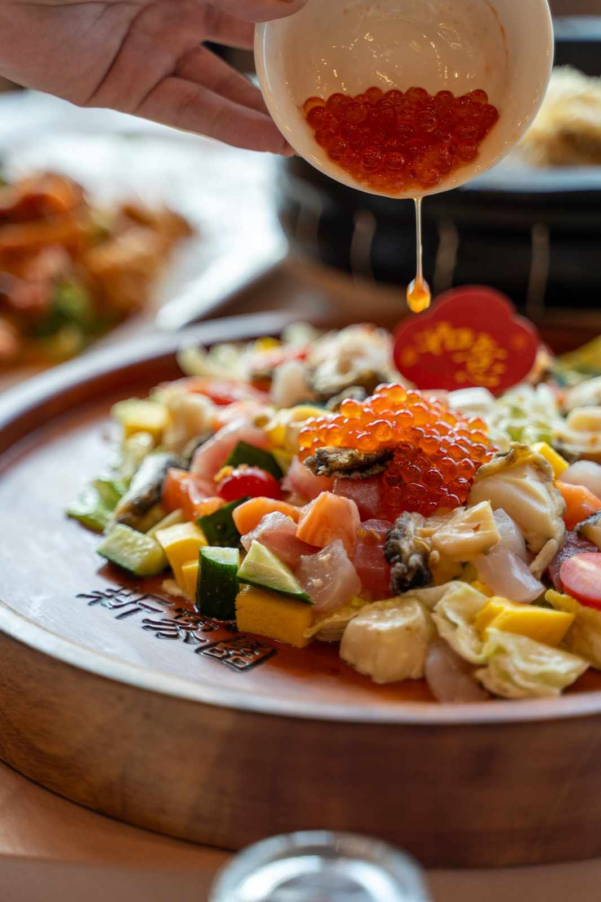
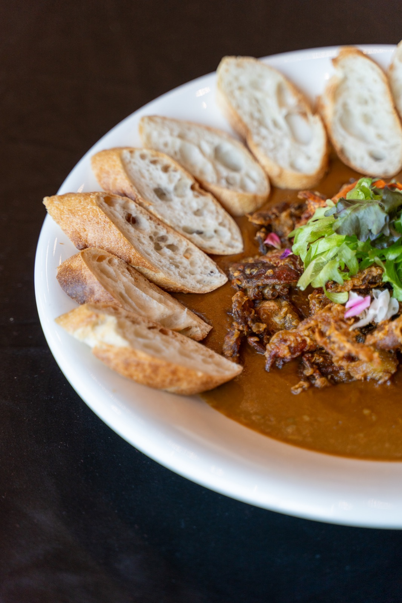

新象園是一間由第二代承接的老字號婚宴餐廳。主理人重視婚宴的細節與美感，廚房也有長年累積的技術。傑弗德與原有師傅共同研發，將菜色呈現、外帶產品、線上行銷及管理建議放在同一個營運方向中思考。

餐廳已有婚宴基礎與知名度，需要思考非婚宴時段如何營運，並讓主理人重視的細節與美感更清楚地被看見。
保留老師傅的料理專長，協作發展主題菜色及外帶、年菜產品，同步檢視線上形象、門面辨識與管理工具。
研發延伸至婚宴之外的消費情境，菜色、攝影與行銷有了共同主題，管理規劃也朝減輕主理人負擔的方向整理。
01 ／ 案例背景
新象園具有婚宴餐飲基礎與資深師傅團隊。第二代主理人希望延續原有口碑，也讓婚宴的視覺、美感與細節有更完整的呈現。除了婚宴，也需要思考日常用餐及外帶商品的機會。
02
餐廳已有成熟技術，接下來要釐清哪些特色值得被放大、哪些菜色適合婚宴、哪些又能轉為外帶及年菜。這些調整需要與原有師傅共同完成，才能保留老字號的料理基礎。
03
04
為什麼：婚宴需要視覺記憶點，也需要既有團隊能執行的料理內容。
影響：結合師傅擅長的技術與新的美感方向，共同研發具主題的菜色。
為什麼：婚宴以外仍有餐飲需求，料理能力可以透過不同產品形式接觸顧客。
影響：發展外帶菜、年菜及真空包裝料理方向，建立非婚宴情境的產品內容。
為什麼：道路旁的餐廳需要清楚辨識，線上也要傳達婚宴與料理特色。
影響：參與外立面辨識討論，並透過拍攝、行銷及內容規劃整理品牌訊息。
為什麼：業主需要更容易掌握現場的工具，減少事事親自處理的負擔。
影響：針對 POS 等系統提供導入規劃與建議，協助評估適合現場的管理方式。
05
06
共同發展主題菜色與呈現方式。
探索外帶菜、年菜與真空包料理方向。
整理線上品牌內容與餐飲視覺。
討論外立面與道路旁的品牌識別。
評估 POS 與非婚宴情境的營運方式。
案例影像



07 ／ 成果
這次合作把既有師傅的專業，連到婚宴美感、主題菜色及外帶年菜等研發方向。透過拍攝、行銷與營運討論，新象園得以更完整地整理品牌呈現，以及婚宴之外可發展的產品與服務內容。
以上為質性觀察與階段性成果說明，實際執行內容依合約範圍為準，不代表對特定營業額、獲利或回本時間的保證。